点击上方“孖仔帮”关注我们
孖仔帮
汇集全国各地及海外的双胎妈妈的交流园地
专门针对双胎孕期，喂养，教育等方面的经验分享
孖仔帮期待您的加入！
让我们一起成长，快乐育儿！
文|圆圈妈 图片来源网络
01
背景，圆圈兄弟2岁11个月
地点：惠州巽寮湾金海湾嘉华度假酒店
人物：圆圈兄弟，圆圈爸妈，圆圈外婆以及圆 圈大大姨一家
01
这次的亲子游相比上次的挑战大梧桐，有点奢华，甚至有土豪的既视感。
因为我们预定的酒店是个五星级的酒店-----惠东巽寮湾金海湾嘉华酒店。
这是我们和圆圈兄弟第一次出游体验五星级的酒店，终于土豪了一次。
这次的行程主要集中在金海湾嘉华度假酒店。
接下来分享的是去巽寮湾路上和入住酒店的体验感受。
关于酒店预订
☂
金海湾嘉华度假酒店一角
圆圈妈这么抠门到家的人，自然是不会订五星级那么大牌的酒店，一个晚上1199的大床房，要不是圆圈大大姨的亲情附送，估计圆圈妈是宁愿跟鲨鱼睡也不舍得花那个“土豪”钱的！
在此，热烈感谢下圆圈大大姨，给我们赠送了1张五星级酒店的客房。
价值1199元一个晚上，含早餐！
20180630，出发啦！即将开始我们的两天一夜游。你懂得，七座车塞满了人。才知道，人多，即便是大货车都觉得不够！
我反正每次出行，总是被窝在中间那个位置，不是被行李淹没了，就是被圆圈哥俩的打斗吵闹声吞没了。在副驾驶位优哉游哉看 “欧巴”剧，刷朋友圈，很多时候都是想想而已啦！
经过惠州海湾大桥，下了高速就进入巽寮湾了，路上除了海岸线就是饭店餐馆，酒楼，路边还有一些流动小贩，停着辆摩托车，竖着大大的招牌【窑鸡】。除此之外，既然是海滩旅游胜地，自然少不了游泳装备了。路边还有很多小摊点卖泳衣泳裤游泳圈等，价格几十上百不等，可讲价，质量参差不齐。
温馨提示：
酒店预订可以在携程等APP上进行，请提早三天预订。路边摊的窑鸡最好不要购买！没有市场监管，担心不卫生。小摊贩的游泳装备质量可圈可点，且有宰客现象，最好出发前准备好出行必需品。
关于交通
☂
酒店内私人沙滩！
因为巽寮湾的交通还不是很完善，大巴车和公交车比较少，比较适合自驾游或组团游。我们在路上看到成批成批的旅游大巴车，陆陆续续地进入了巽寮湾。
自驾游其实也很痛苦，塞车乃“兵家常事”！
海湾大桥下来，就是高速出口，桥上到高速出口段容易塞车，我们准备下高速那会儿，是下午的3点半左右，在桥上塞了半个钟才下高速。但这已经是很不错的情况了，我们一点半出发之前查路线，发现海湾大桥已经被私家车淹没了，妥妥的严重拥堵，大红色的警告啊！
温馨提示：
自驾游要避开高峰期。不过现在那里是旅游旺季，估计是难以避免的了，请做好塞车的准备，路途较远的，请自备干粮。
关于入住
☂
酒店大堂一角，高逼格的设计！
圆圈爸的“小情人”雄赳赳地开到了酒店大堂门口。话说，这也是“小情人”第一次下榻五星级酒店，多多少少有点心情紧张。这不，刚进去的时候，圆圈爸被一个行李生虔诚的鞠躬和大大的敬礼吓了一大跳，油门一踩华丽丽地冲过了大堂门口。
车停在大堂门口会有服务生帮忙拿行李，如有需要可以把行李放在小推车上，服务生会帮忙登记好，等拿到房号之后，服务生也会跟着把行李推到客房。
酒店大堂不赖哦，对于鲜少出入过大场面圆圈妈，这里简直是天堂。
酒店的装潢设计前卫大气，软硬件设施给人现代化，高大上的感觉。酒店正门口还有一对才子佳人现场演唱《女人花》，我觉得此刻更适合来一首《好日子》，呵呵！
我们去前台”check in”的时候，正是入住高峰期，人群熙熙攘攘，大家都拿着大包小包的穿梭在大堂客房之间。前台人手都不够，还要排长队等候入住。
温馨提示：
“check in”的时候需要登记身份证，还要对应照相。记得哦，是所有入住客房的成年人均需要登记身份信息和拍照。入住登记的时候，每人会派发到一个酒店的地图，帮助你了解酒店内的环境设施。
关于客房
☂
客房内有两张1.2米大的床！
客房挺大的，有30平米左右，两张一米2的床，还有书桌。洗浴间超大，厕所和淋浴间分开。还有一个小阳台，可以看到外面的海景，可惜订的是一楼，海景都被树木遮挡了。
阳台上有椅子和小桌子，可以翘个二郎腿，抽个烟，看着外面的风景，假装下沧桑哈！阳台上还有落地衣架可以晾晒衣服！嗯，非常人性化！
房间内有矿泉水，烧水水壶，咖啡和咖啡专用杯，冰箱，吹风筒，浴袍，洗漱用品齐全。
美中不足的是，衣帽间居然跟洗浴室是一体的，且没有门隔开。洗浴间的门也没有锁！这对于隐私空间要求较高的圆圈妈来说，这设计简直奇葩了！
晚上还有圆圈的二大姨一家3口加入了我们的队伍，客房一下子被挤满了。
好在客房有备用的被子，铺上自带的香港海马牌折叠床垫，一间客房睡两家人完全没有问题。
温馨提示：
房间内的东西均可免费使用，放心饮用！
关于娱乐设施
☂
成人区泳池，面朝大海，春暖花开！
有温泉，可惜了。带着两个熊孩子，没有享受到。还没有泡过温泉的圆圈妈表示遗憾得“两眼泪汪汪”
有健身房，圆圈爸那瘦不拉几和营养不良的样子，貌似跟健身房没半毛钱关系，而我更担心圆圈哥俩把人家哑铃给抱走了！因此，此免费体验也错过了！
有酒吧，就在海滩边上，但时间关系依然没有机会体验，好在对酒吧的兴趣不高，不觉得可惜。像圆圈妈这样的小清新，从出生到现在进酒吧的次数可以单只手数的出来。
还好，有泳池！这个压轴大咖，总算没有错过！
这酒店最多的活动设施就是泳池了，几乎遍布每个角落，分室内和室外，还根据不同年龄阶段和游泳高手OR菜鸟，设立不同类型的泳池。有些高端户型，一楼的客房还自带游泳通道，阳台一出去就可以跳进泳池，可一直游到室内泳池。
儿童戏水区
池水最深100厘米左右，池水内有滑滑梯和戏水区。基本上中小童和不会游泳的大朋友及上年纪的老人家都集中在此。
这个儿童戏水区，可把老娘坑惨了！
原以为圆圈兄弟那么天不怕地不怕的样子居然怕水，妥妥的旱鸭子。
尤其是圆圆，我只是要给他换件衣服，他就狂奔而去，一路哭喊着要回去，害的老娘穿着丑不拉几的泳衣，晃动着肚子上那呼之欲出赘肉，追了他好几米远。
我和圆圈爸轮流做思想工作，圆圈哥俩就是抵死不从，分别抱着圆圈外婆的大腿，一副视死如归，大义凛然的样子。
我最没耐性了，尤其是我还穿着那么丑的泳衣，稍微动作下就会晃动很久的赘肉，我得赶紧躲到水里去，不要影响到别人玩乐的心情。
此外，这可是产后三年第一次下水啊。好期待啊！虽然圆圈妈也是旱鸭子一个！
圆圈爸只好接下我丢下的烂摊子，继续做思想工作。过了一会，圈圈终于肯下水了，但也仅限于坐在岸边的台阶上，战战兢兢地跟我们互动下。
圆圆依然坚守着，抵死不从！圆圈爸的耐心也被耗尽了，抱着他就下水了。
圆圆大哭，哭声响彻整个酒店，简直惊天地泣鬼神，不知道的还以为我这孩子是刚绑架回来的。
最后还是受不了他那样哭到背过气，只好投降把他抱上岸，让圆圈外婆看着。我兴致依旧，把两个娃晾在一边，继续泡水里玩！
儿童区
梯度式，有0.5米深，0.8米深，1.5,米深，1.6米深。
大人小孩均可以游泳，还可以租一个充气小船给儿童划船。不会游泳的儿童，必须有一个成人陪同。
我们第二天把泳池阵地挪到这个儿童区，起初以为圆圆是被儿童戏水区的戏水设施吓到了，结果换到儿童区，圆圆依然不肯下水，而且因为昨晚的不愉快经历，他已经犹如惊弓之鸟，任谁抱着都不肯往前挪动半步。
而圈圈已经彻底放开了，由圆圈爸保驾护航，套上游泳圈，在1.米5的深水区玩得不亦乐乎。
成人区
最浅的地方是1米6。我压根就不敢往那里去，但那个泳池是看海景视野最好，欣赏美景的绝佳位置！
泳池正对着海边，且无任何围栏遮挡。游累了，可以坐在岸边，看着不远处的海浪，沙滩。
只可惜，我只有遐想和流口水的份了！
室内泳池
比较小。人气不高，比较少人去游玩，且必须装备齐全（如必须带泳帽）才可以下水。
关于酒店特色
☂
即将开始的篝火晚会！
有篝火晚会，这是个小型的篝火晚会，由酒吧内的工作人员组织主持。活动分为，有奖竞答+跳舞+亲子游+放烟花。8点45分开始，持续时间约1个小时。
在篝火晚会前还有投影仪播放出来的动画片，海滩上均有沙滩椅，可躺可坐。一家人吹着海风，看着电视，其乐融融哦！
这个篝火晚会比较适合稍大一点的儿童及其大朋友，尤其是亲子游戏那一环节，需要儿童和大人配合好才能进行的。
像圆圈这样的小不点，只会玩泥沙的，实在没啥乐趣可言。
篝火晚会结束之后，有3分钟左右的烟花。这恐怕是圆圈盼了一个晚上最有看点的时刻了。
节目的最后，圆圈兄弟携他们的小表姐，凭借双胞胎的特殊魅力，零压力讨要到一个毛绒绒玩具，且人手一个！
我们吃完晚饭之后，已经是八点半了，错过了海平面上的夕阳，但是饭后在海边散步也不失一件惬意的事情。沙子很柔软很细，不像大小梅沙的沙子那么粗还凹脚。
不亏是五星级的私人沙滩啊！吹着海风，哼着小曲，坐在椅子上看不远处的渔船飘来的“黑灯瞎火”，不错！你值得拥有！
值得说一下的是，圆圈外婆，快60岁了，第一次来海边，第一次住五星级酒店。可把她老人家激动得。
温馨提示：
去海边的时候，不用带垫子，随处都是凳子椅子，非常人性化。有小朋友的家庭可以带上沙滩玩具或者小皮球，可以玩泥沙，踢球。
因为是夜晚，路灯照射距离有限，不建议晚上去海边游泳。
关于晚餐
☂
室内泳池的一处吧台！
我们的晚餐是在酒店的西餐厅解决的，自助餐形式，饭菜中规中矩。没有特别好吃，但也不会差到哪里去。
只是对于我们这些看见别人大口吃生三文鱼都会恶心不已的人来说，五星级自助餐真心不适合我们！
还要238元一个人！
圆圈外婆说看到别人生吃色拉，大口大口地吃草，还吃的那么津津有味，觉得这样的人生真的好悲惨啊！
温馨提示：
房费不包括晚餐，需要额外支付餐费，一人238元。附近好像也没有吃的地方，
需要驱车两三公里才有饭店菜馆。
关于早餐
☂
请不要叫我蘑菇，我的全名叫包子！
我们的早餐也是自助餐，选择较多，中西混搭。
因为是星期天，我们去的时候是上午8点半，正是用餐高峰期，我们犹如进入了菜市场，连餐位都找不到。实在无法想象这是个五星级的酒店，难道是有钱人太多了，不在乎那点小钱？走了好多圈我们才在角落处跟人拼桌成功，那两个大男人看着我们带着四个小朋友风风火火地入座了，最终忍不住匆匆喝了杯茶闪了，准确地说是被我们硬生生逼走了！
由于人实在太多了，走路稍不注意就会踩到脚后跟，很多美食我们都来不及品尝，即便如此我们还是在自助餐那里混战了一个小时。早餐还是很丰盛的，糕点，甜食，粉面应有尽有，只是人太多，而且还带着孩子，我们的餐桌永远像鬼子进村一样狼藉一片，哀鸿遍野。
我们准备走的时候，看到来收拾桌子的服务生一脸生无可恋的样子！哎，就知道我们的杀伤力是有多么强悍了！
温馨提示：
房费已经包含早餐。如需加位，每人136元。可带身高不够1.2的小孩，但必须是一个大人带一个小孩。身高超过1.2米的小朋友，会收取59元的餐位费。
关于服务：
☂
儿童戏水区！注意上面那个桶会有水洒下来！
基本上满意！前台，行李生，服务员等都周到有礼。
我记得我在吃早餐的时候，选择强迫症的老毛病又犯了，站在一堆糕点面前，不知道该夹哪个。正好有一个服务员小哥在补给餐食，他端着刚出炉的蛋挞，一个劲地催我赶紧夹几个，说是特好吃，不然晚了就没了。
好吧！这么真诚可爱的人，真让人忍不住点赞啊！
我最后把人家准备补给的蛋挞全往自己的盘里夹走了！
关于退房：
☂
早晨，客房外看到的蓝天白云！
次日的12点之前就要办理好退房手续。
我们吃过早餐之后，去泳池玩了下水很快就11点半了。因为外面实在太晒了，分分钟都会被烤焦的意思。我们退房之后无心恋战，只好打道回府！
其实酒店还有很多游玩设施还没有体验到，但带着孩子出游，只能是走马观花的了！
圆圈妈的忏悔录：
这次的亲子游，主要还是满足了圆圈妈！玩得乐不思蜀的还是圆圈妈！
圆圈哥俩也许受年龄的限制，或者是口味不对，感觉没有上次爬山那么好玩！
回程的时候，哥俩一路苦瓜着脸，表示心情不是很美丽的样子。
果然，男孩子终究不喜欢奢华的玩法啊！
我“穷养男孩”的目的达到了，我应该觉得开心吗！哈哈！
这次的亲子游让我对圆圈有了更深刻的了解，也发现了自己身上的很多不足。
在回程的时候，圆圈大大姨问圆圆为什么不下水玩。
圆圆很直接地说：“因为水里有大鲨鱼，会咬人，会被大鲨鱼吃掉的！”
圆圈大大姨尝试解释，但看他一脸惊恐的样子，我知道他的这种害怕已经深入骨髓了！而这个罪魁祸首就是我这个当妈的！
我经常给圆圈哥俩讲大鲨鱼，并老是拿大鲨鱼去恐吓他们，逼他们就范，如“不好好吃饭的小朋友，就会被大鲨鱼吃掉”，“不快点睡觉的宝宝，就会被大鲨鱼吃掉！”
而且，平时给他们看的动画片，也没有注意筛选。有些儿童不宜的恐怖画面也被圆圈接触到了。以至于，有时候晚上睡觉，圆圆会突然大哭，而且哭的很凄惨，还拼命挥着手臂，好像在找救命稻草一样发出求助式的尖叫。
这跟他平时白天可能看到些恐怖的画面脱不了干系！
只知道玩泥沙的圆圈兄弟！
此次游玩，去的是五星级酒店，这对于没有见过“大蛇疴屎”的我，真的是太有吸引力了。以至于我在泳池忘乎所以，不顾圆圈的害怕和哭泣，自个跳进水里先嗨一阵。期间也没有关心过圆圈有没有人照看着，会不会走丢，会不会掉到深水区，有没有渴了饿了。
反正就是牢记在心的孩子防丢手册居然在五星级酒店的诱惑下，灰飞烟灭了！万幸，圆圈哥俩成全我这个当妈的玩性大发，没有到处乱跑，全程站在岸边，一边哭一边看着我在儿童戏水区兴奋尖叫！
写到这里，我已经写不下去了。
就在我写这个游记的时候，圆圆数次走进书房拉我去客厅看他画画，而我为了保留住难得的写作灵感，居然三言两语把他打发走了。
我要去跟圆圈兄弟道歉。
圆圈妈：资深屌丝女+腐女一枚，家有孖仔男两枚。
微信公众号ID：babytwins-mummy 孖仔帮
个人博客：双胞胎萌娃会（www.sgguy.com）
一个专注双胞胎群体的网站，每天分享亲子养育经验
目前孖仔帮建立了微信群
孖仔帮双胞胎孕期群&孖仔帮双胞胎养育群
家长们可以根据需要进入任意一个群
想要进入孖仔帮的微信群
可以加圆圈妈的微信。
由圆圈妈邀请入群
欢迎加入双胞胎大家庭
让我们一起学习成长，快乐育儿！
公众号：孖仔帮
ID:babytwins-mummy
个人博客: www.sgguy.com
一个专注双胞胎群体的育儿网站
点击下方“阅读原文”，可直接进入博客网站
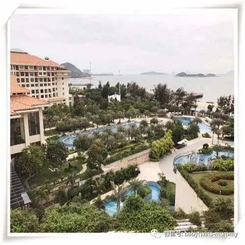
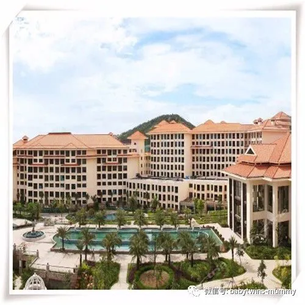
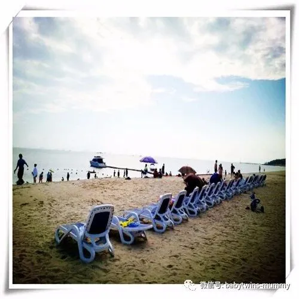
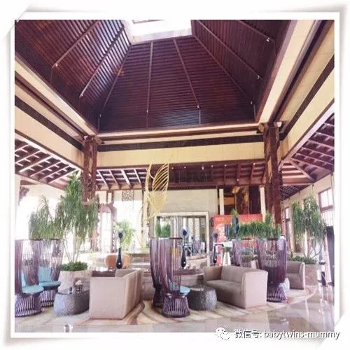
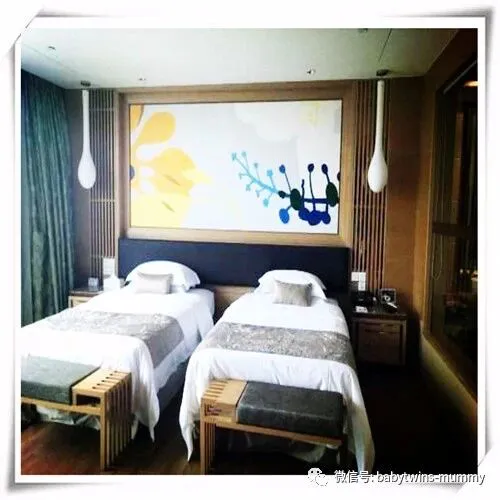
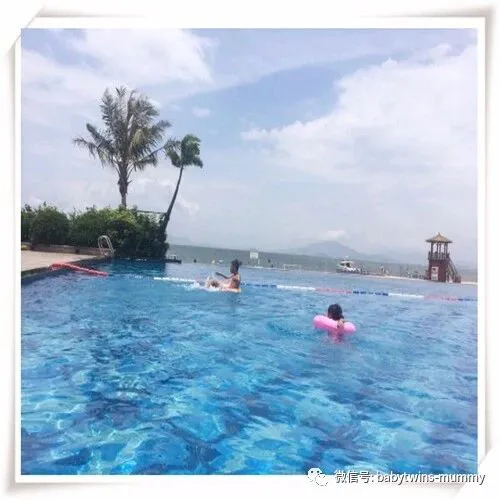
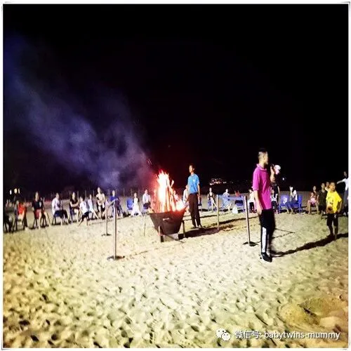
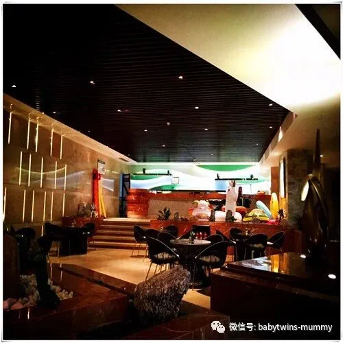
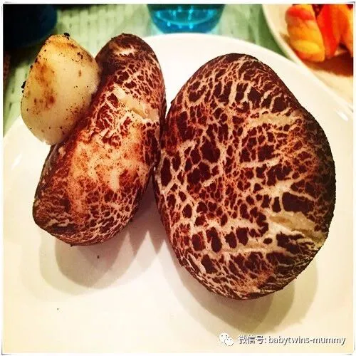
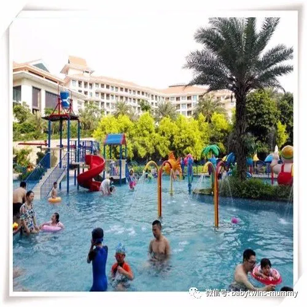
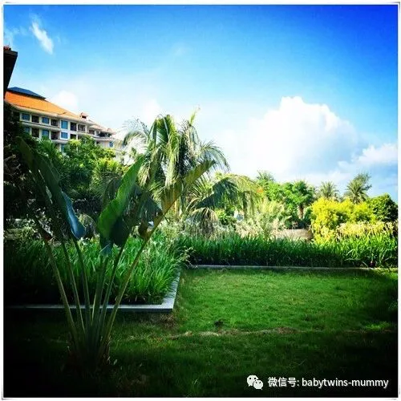
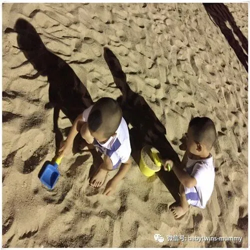


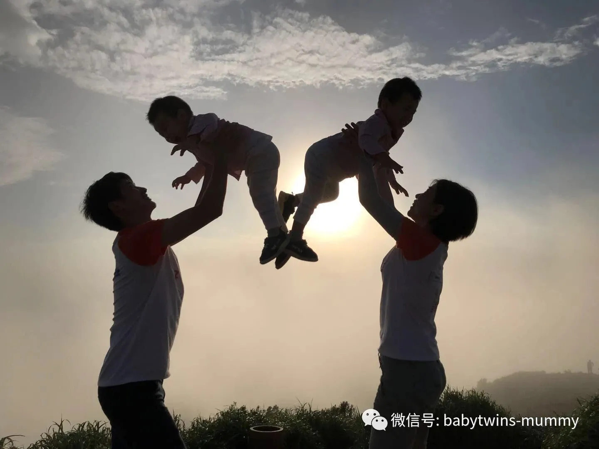